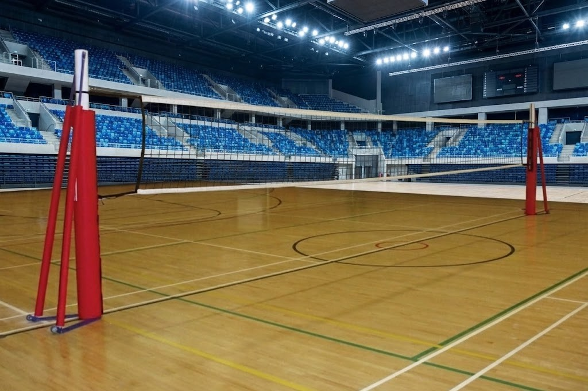
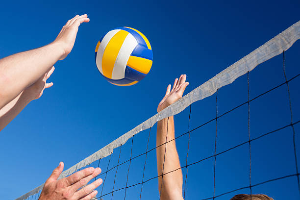
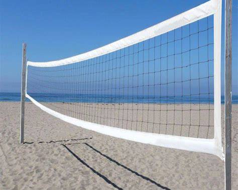

.jpg)

.jpg)

O vôlei é um esporte muito popular e praticado em diversos países. Ele foi criado em 1895, nos Estados Unidos, por William G. Morgan. O objetivo principal do jogo é fazer a bola passar por cima da rede e tocar o chão da quadra adversária, enquanto a equipe tenta impedir que isso aconteça em seu próprio lado. Uma partida de vôlei é disputada por duas equipes, normalmente com seis jogadores de cada lado. Os atletas precisam trabalhar em equipe, utilizando movimentos como saque, recepção, levantamento, ataque e bloqueio. Cada jogador possui uma função importante para que a equipe consiga marcar pontos. Além de ser divertido, o vôlei traz vários benefícios para a saúde. A prática ajuda a melhorar a coordenação motora, o equilíbrio, a agilidade e o condicionamento físico. Também desenvolve valores como cooperação, respeito, disciplina e trabalho em equipe. O vôlei é, portanto, um esporte que une atividade física, estratégia e união entre os jogadores. Por isso, ele é muito praticado tanto de forma profissional quanto como lazer em escolas, clubes, praias e outros lugares.


